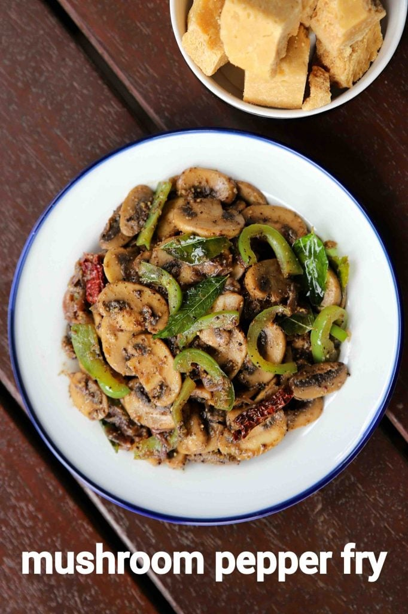

Mushroom Pepper Fry

Description
An easy and flavoured south indian starter or side dish recipe made with sliced mushroom and pepper powder.
Typically in south india, this dish is made as a side to sambar rice or rasam rice combination, but can also be served as a starter.
Moreover, it is generally made as a dry dish, but can also be served with a sauce, if it is prepared as a main.
Ingredients
- 1 tbsp pepper
- ½ tsp fennel/saunf
- ½ tsp cumin/jeera
- ½ tsp coriander seeds
- 2 tbsp ghee/clarified butter
- 1 tsp mustard
- 2 dried red chilli
- few curry leaves
- 1 inch ginger, finely chopped
- ½ onion, sliced
- 300 grams mushroom, sliced
- ½ capsicum, sliced
- ½ tsp salt
Steps
- First, in a small mixi jar take 1 tbsp pepper, ½ tsp fennel, ½ tsp cumin and ½ tsp coriander seeds.
- blend to coarse powder without adding any water. keep aside
- now in a large kadai heat 2 tbsp ghee and splutter 1 tsp mustard, 2 dried red chilli and few curry leaves.
- also, add 1 inch ginger and ½ onion.
- saute until onions shrink slightly.
- further, add 300 grams mushroom and stir fry on high flame.
- saute until onions shrink slightly and moisture is released.
- further, add ½ capsicum and stir fry for 2 minutes.
- now add the prepared pepper masala powder and ½ tsp salt.
- mix well making sure all the spices are well coated.
- finally, enjoy mushroom pepper fry with phulka or rice.
Back to Homepage